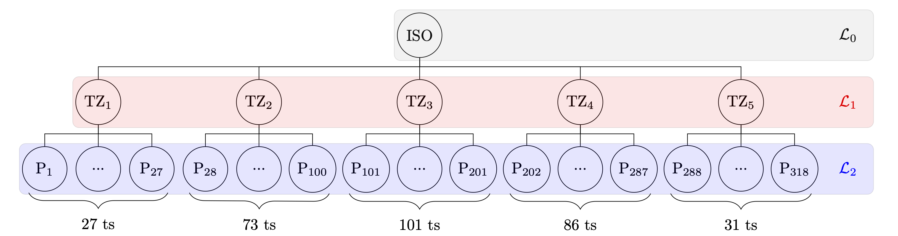
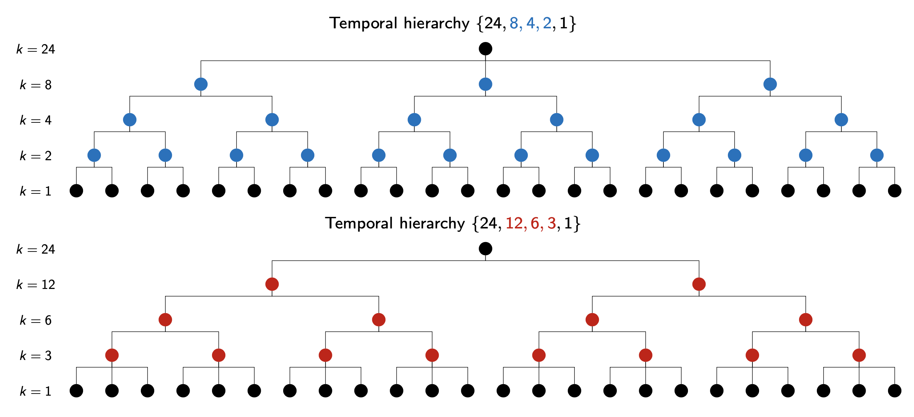
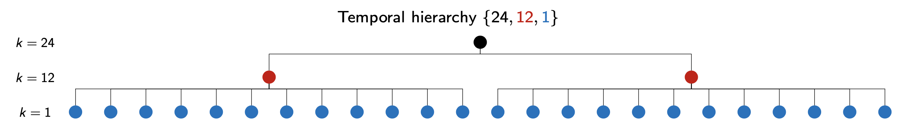

Forecast Reconciliation for Hierarchically Organized Data
daniele.girolimetto@phd.unipd.itDepartment of Statistical Sciences, University of Padova (Italy)
March 31, 2022
Introduction
In this lab, we will analyze the SPDIS dataset, which consists of 324 hourly time series data of photovoltaic power generation. Our main goal is to reconcile the base forecasts, which are currently neither cross-sectionally (e.g., spatially) nor temporally coherent.
Lab session is organized in two main parts:
Core lab: data organization,
FoRecofunctions, visual evaluation of the resultsPractical challenges: non negativity issues, a priori constraints, subset of temporal aggregation orders
Library
The required libraries are plotly, gridExtra, scales, and tidyverse (specifically ggplot2) to create graphs and tables. For reconciliation, we will use FoReco.
The data
We consider the Solar Power Data for Integration Studies dataset (SPDIS) firstly introduced by Yang et al. (2017) (Reconciling solar forecasts: Geographical hierarchy, Solar Energy).
It refers to 318 simulated PV plants in California for the 2006, whose hourly irradiation data are organized in three levels (n=324, n_b=318, n_a=6):

\mathcal{L}_0: 1 time series for the Independent System Operator (ISO), given by the sum of the 318 plant series;
\mathcal{L}_1: 5 time series for the Transmission Zones (TZ), each given by the sum of 27, 73, 101, 86, and 31 plants, respectively;
Code
load("./data/pre_analysis.RData")
states <- map_data("state")
ca_df <- subset(states, region == "california")
counties <- map_data("county")
ca_county <- subset(counties, region == "california")
pre_analysis <- pre_analysis |>
mutate(geo = recode(geo, "X01" = "TZ1", "X02" = "TZ2",
"X03" = "TZ3", "X04" = "TZ4", "X05" = "TZ5"))
p1 <- ggplot(data = ca_df, mapping = aes(x = long, y = lat, group = group)) +
coord_fixed(1.3) +
geom_polygon(color = "black", fill = "gray")+
geom_polygon(data = ca_county, fill = NA, color = "white") +
geom_polygon(color = "black", fill = NA)+
geom_point(aes(y = as.numeric(Latitude), x = as.numeric(Longitude), group = 1,
size = as.numeric(gsub("([0-9]+).*$", "\\1",CapacityMW))),
data = pre_analysis,
alpha = 0.25)+
guides(size=guide_legend(title="Size in MW"))+
ylab("Latitude (°)")+
xlab("Longitude (°)")+
theme_minimal()+
theme(legend.position=c(.825,.825),
legend.background = element_rect(color = "white"),
text = element_text(size = 8))
p2 <- ggplot(data = ca_df, mapping = aes(x = long, y = lat, group = group)) +
coord_fixed(1.3) +
geom_polygon(color = "black", fill = "gray")+
geom_polygon(data = ca_county, fill = NA, color = "white") +
geom_polygon(color = "black", fill = NA)+
geom_point(aes(y = as.numeric(Latitude), x = as.numeric(Longitude), group = 1,
shape = geo, col = geo),
data = pre_analysis)+
guides(shape=guide_legend(title="Groups"),
col=guide_legend(title="Groups"))+
ylab("Latitude (°)")+
xlab("Longitude (°)")+
theme_minimal()+
theme(legend.position=c(.825,.79),
legend.background = element_rect(color = "white"),
text = element_text(size = 8))
gridExtra::grid.arrange(p1, p2, ncol = 2)
- \mathcal{L}_2: 318 bottom time series at plant level (P).
# Information about the reconciliation structure
level1 <- c(27, 73, 101, 86, 31) # L1 division of the bts
# Cross-sectional (contemporaneous) matrix, (na x nb)
C <- rbind(1, # L0 is the total
Matrix::bdiag(lapply(level1, function(x) t(rep(1, x)))))
# List with all the cross-sectional information
cs_info <- FoReco::hts_tools(C = C, sparse = TRUE)
dim(cs_info$C) # cs_info$n, cs_info$nb, cs_info$na
#> [1] 6 318The hourly time series can be (non-overlapping) aggregated at 2, 3, 4, 6, 12, and 24-hour intervals within a day (daily cycle, m=24 and \mathcal{K} = \{24,12,8,6,4,3,2,1\}).

The forecasts are generated for 2 days with a 14-day training period. Therefore, for the hourly series, we have 48 forecast (1- to 48-step ahead), and so on up to the daily series with two daily forecasts, respectively 1- and 2- day ahead.
Suppose we wish to predict the PV power generation at the end of May 16th, 2006 for the upcoming two days, utilizing the previous two weeks as training data.
Code


Our objective is to reconcile forecasts, which is a post-forecasting process that involves transforming
a set of incoherent forecasts into coherent forecasts which satisfy a given set of linear constraints. In this example we use the following base forecasts:
Numerical Weather Prediction (NWP) forecasts (3TIER, 2010) for the 318 hourly time series at the plant level (\mathcal{L}_2).
Automatic ETS forecasts using the R-package
forecast(Hyndman et al., 2022) for all the remaining time series (6 hourly ts and 324 ts at greater temporal aggregation order).
Load the forecasts, residuals, and actual observations for May 17th and 18th.
load("./data/data_17_18_5.RData")
starting_time <- as.POSIXct("2006-05-17 00:00:00", tz="UTC")
print_list_matrix(base) # Base forecasts
#> k24 k12 k8 k6 k4 k3 k2 k1
#> row 2 4 6 8 12 16 24 48
#> col 324 324 324 324 324 324 324 324
dim(hourly_obs) # Actual values
#> [1] 48 324
print_list_matrix(res) # In-sample residuals
#> k24 k12 k8 k6 k4 k3 k2 k1
#> row 14 28 42 56 84 112 168 336
#> col 324 324 324 324 324 324 324 324Reconciliation
Cross-sectional forecast reconciliation
Let’s start by looking at the hourly forecasts and their corresponding residuals.
Our objective is to generate reconciled forecasts using the shr approach (comb = "shr"), which involves shrinking the sample covariance matrix (more details in the FoReco documentation).
reco_cs <- htsrec(basef = base_cs, # base forecasts
C = C, # aggregation matrix
#Ut = cs_info$Ut, # zero constraints matrix
comb = "shr", # covariance matrix approx
res = res_cs, # residuals
#type = "S", # reconciliation formula
keep = "recf") # output option
str(unname(reco_cs))
#> num [1:48, 1:324] 0.2818 0.0128 -0.14 -0.0708 -0.2876 ...
#cs_info$Ut[, 1:10]To verify that the forecasts have been reconciled, we can check that all constraints have been satisfied.
Finally, we can plot these series. For example, if we take the series \mathrm{P}_{17} (label 01_045), we have:
Code
id_serie <- "01_045"
data_cs <- tibble(ocs = reco_cs[,id_serie],
base = base_cs[,id_serie],
obs = hourly_obs[,id_serie],
time = seq(from = starting_time, by = "hour",
length.out = 48))
plot_cs <- data_cs |>
pivot_longer(-time, names_to = "Approach") |>
ggplot(aes(x = time, col = Approach, y = value)) +
geom_line() +
scale_x_datetime(labels = scales::label_date("%I:%M %p\n%d/%m"),
breaks = seq(starting_time, by = "6 hours", length.out = 49/6)) +
labs(x = NULL, y = NULL) +
theme_minimal() +
theme(legend.title = element_blank())
plotly::ggplotly(plot_cs)Root mean square error:
Temporal forecast reconciliation
In the temporal case, we are working with a single series (e.g., \mathrm{P}_{17}). In this case, we no longer have matrices as inputs to the functions, but rather vectors whose components are ordered according to increasing temporal frequency. This means that the first two elements of the vector refer
to the two daily forecasts, respectively 1- and 2- day ahead, and so on, up to the last 48 values that refer to the hourly forecasts.
id_serie <- "01_045"
base_te <- Reduce(rbind, base)[, id_serie] # base forecasts
#head(base_te)
#tail(base_te, n = 48)
str(unname(base_te))
#> num [1:120] 4.8 4.8 2.54 2.08 2.49 ...
res_te <- Reduce(rbind, res)[, id_serie] # residuals
str(unname(res_te))
#> num [1:840] 0.14267 -0.22525 0.13477 0.00412 -0.47658 ...The use of residuals is not always strictly necessary, but depends on the approximation of the covariance matrix that we want to use (comb parameter). For example, in the temporal case, it has been shown (Di Fonzo and Girolimetto, 2023, Spatio-temporal reconciliation of solar forecasts, Solar Energy) that even a simple approach like ‘struc’ is effective in improving the performance of the base forecasts.
reco_te <- thfrec(basef = base_te, # base forecasts
m = te_info$m, # max. order of temporal aggregation
#comb = "sar1", # covariance matrix approx
comb = "struc", # covariance matrix approx (no res)
#res = res_te, # residuals
keep = "recf") # output option
str(unname(reco_te))
#> num [1:120] 4.79 4.8 2.64 2.14 2.65 ...Code
names(base_te) <- names(reco_te)
data_te <- tibble(ote = as.numeric(FoReco2ts(reco_te)$k1),
base = as.numeric(FoReco2ts(base_te)$k1),
obs = hourly_obs[,id_serie],
time = seq(from = starting_time, by = "hour",
length.out = 48))
plot_te <- data_te |>
pivot_longer(-time, names_to = "Approach") |>
ggplot(aes(x = time, col = Approach, y = value)) +
geom_line()+
scale_x_datetime(labels = scales::label_date("%I:%M %p\n%d/%m"),
breaks = seq(starting_time, by = "6 hours", length.out = 49/6)) +
labs(x = NULL, y = NULL) +
theme_minimal() +
theme(legend.title = element_blank())
plotly::ggplotly(plot_te)Root mean square error:
Cross-temporal forecast reconciliation
Let’s keep it simple: partly bottom-up
Sometimes simple one-dimensional approaches can prove very useful, especially in high dimensional problem where other approaches could be resource-intensive in terms of time and computational power. Partly Bottom-Up approach consists in reconciling the high frequency bottom time series (e.g., the 318 hourly base forecasts) and then applying bottom-up. For example, we previously reconciled the hourly time series in a cross-sectional framework. The obtained forecasts may then be aggregated through temporal bottom-up, giving cross-temporally reconciled forecasts.
# Same results
all(abs(reco_pbu1-t(reco_pbu2)) < sqrt(.Machine$double.eps))
#> [1] TRUE
# Cross-temporal constraints
discrepancy <- function(x, tol = sqrt(.Machine$double.eps)) {
cs <- max(abs(cs_info$Ut %*% x))
te <- max(abs(te_info$Zt %*% t(x)))
cat("cs discrepancy:", ifelse(cs>tol, sprintf("%.8f", cs), 0),
"\nte discrepancy:",ifelse(te>tol, sprintf("%.8f", te), 0))
}
discrepancy(reco_pbu2)
#> cs discrepancy: 0
#> te discrepancy: 0Optimal forecast reconciliation
To perform cross-temporal reconciliation with FoReco, it is necessary to arrange base forecasts (and residuals) in matrix form. The rows of the matrix represent the cross-sectional dimension, while the columns represent the temporal dimension.
# Base forecasts matrix
base_ct <- t(Reduce(rbind, base))
str(unname(base_ct))
#> num [1:324, 1:120] 1611 131 352 472 477 ...
discrepancy(base_ct)
#> cs discrepancy: 82.24490737
#> te discrepancy: 87.12943983
# Residuals matrix
res_ct <- t(Reduce(rbind, res))
str(unname(res_ct))
#> num [1:324, 1:840] -90.018 -0.924 -18.96 -100.991 -57.978 ...First, we will look at some heuristic approaches (KA, reverse KA and iterative) that use reconciliations separately along the cross-sectional and temporal dimensions, but still satisfy the cross-temporal constraints.
# tcs (KA): first-temporal-then-cross-sectional forecast reconciliation
reco_tcs <- tcsrec(basef = base_ct, # base forecasts
m = m, # max. order of temporal aggregation
C = C, # aggregation matrix
thf_comb = "sar1", # te covariance matrix
hts_comb = "wls", # cs covariance matrix
res = res_ct) # residuals matrix
discrepancy(reco_tcs$recf)
#> cs discrepancy: 0
#> te discrepancy: 0# cst: first-cross-sectional-then-temporal forecast reconciliation
reco_cst <- cstrec(basef = base_ct, # base forecasts
m = m, # max. order of temporal aggregation
C = C, # aggregation matrix
hts_comb = "wls", # cs covariance matrix
thf_comb = "sar1", # te covariance matrix
res = res_ct) # residuals matrix
discrepancy(reco_cst$recf)
#> cs discrepancy: 0
#> te discrepancy: 0# Iterative heuristic cross-temporal forecast reconciliation
reco_ite <- iterec(basef = base_ct, # base forecasts
m = m, # max. order of temporal aggregation
C = C, # aggregation matrix
thf_comb = "sar1", # te covariance matrix
hts_comb = "wls", # cs covariance matrix
res = res_ct, # residuals matrix
start_rec = "thf", # step 1 framework
note = TRUE, # console information
plot = "none", norm = "inf", tol = 1e-6)
#> --------------------------------------------------------------------------------
#> Iter # | Cross-sec. incoherence | Temporal incoherence |
#> thf: 0 | 82.24 | 87.13 |
#> thf: 1 | 31.90 | 14.56 |
#> thf: 2 | 6.56 | 3.18 |
#> thf: 3 | 1.44 | 7.18e-01 |
#> thf: 4 | 3.26e-01 | 1.66e-01 |
#> thf: 5 | 7.54e-02 | 3.90e-02 |
#> thf: 6 | 1.78e-02 | 9.34e-03 |
#> thf: 7 | 4.26e-03 | 2.27e-03 |
#> thf: 8 | 1.03e-03 | 5.57e-04 |
#> thf: 9 | 2.54e-04 | 1.38e-04 |
#> thf: 10 | 6.30e-05 | 3.44e-05 |
#> thf: 11 | 1.57e-05 | 8.64e-06 |
#> thf: 12 | 3.95e-06 | 2.18e-06 |
#> thf: Convergence (starting from thf) achieved at iteration number 13!
#> thf: Temporal incoherence 5.51e-07 < 1e-06 tolerance
#> --------------------------------------------------------------------------------
discrepancy(reco_ite$recf, tol = 1e-6)
#> cs discrepancy: 0
#> te discrepancy: 0Finally, let us consider the simultaneous optimal reconciliation approach.
# Optimal combination cross-temporal forecast reconciliation
reco_ct <- octrec(basef = base_ct, # base forecasts
m = m, # max. order of temporal aggregation
C = C, # aggregation matrix
comb = "wlsv", # covariance matrix
res = res_ct, # residuals matrix
keep = "recf")
discrepancy(reco_ct)
#> cs discrepancy: 0
#> te discrepancy: 0Code
rownames(reco_pbu2) <- rownames(reco_ct)
data_ct <- tibble(oct = FoReco2ts(reco_ct)$k1[, id_serie],
pbu = FoReco2ts(reco_pbu2)$k1[, id_serie],
tcs = FoReco2ts(reco_tcs$recf)$k1[, id_serie],
cst = FoReco2ts(as.matrix(reco_cst$recf))$k1[, id_serie],
ite = FoReco2ts(reco_ite$recf)$k1[, id_serie],
base = as.numeric(FoReco2ts(base_te)$k1),
obs = hourly_obs[, id_serie],
time = seq(from=starting_time, by="hour", length.out = 48))
plot_ct <- data_ct |>
pivot_longer(-time, names_to = "Approach") |>
ggplot(aes(x = time, y = value, col = Approach)) +
geom_line()+
scale_x_datetime(labels = scales::label_date("%I:%M %p\n%d/%m"),
breaks = seq(starting_time, by = "6 hours", length.out = 49/6)) +
labs(x = NULL, y = NULL) +
theme_minimal() +
theme(legend.title = element_blank())
plotly::ggplotly(plot_ct)Root mean square error:
score_ct <- data_ct |>
pivot_longer(-c(time, obs), names_to = "Approach") |>
group_by(Approach) |>
summarise(RMSE = sqrt(mean((value-obs)^2)))
score_ct
#> # A tibble: 6 × 2
#> Approach RMSE
#> <chr> <dbl>
#> 1 base 0.0226
#> 2 cst 0.0240
#> 3 ite 0.0224
#> 4 oct 0.0205
#> 5 pbu 0.0323
#> 6 tcs 0.0222Practical challenges
Non negativity issues
As we have seen in the previous plots, a major concern when reconciling this type of data is the presence of negative values. It is worth noting that this occurs even when the reconciliation procedure works with non-negative base forecasts. To address this issue, FoReco offers two options: osqp and sntz. The former is an optimization approach with non-negativity constraints using the R package osqp (Stellato et al. 2020). The latter is a simple heuristic that exploits the hierarchical nature of the data: any negative forecasts for the high-frequency bottom time series are set to zero, and then a cross-temporal bottom-up procedure is applied to obtain the complete set of fully (and non-negative) coherent forecasts.
system.time(osqp_cs <- htsrec(basef = base_cs, C = C, comb = "shr",
res = res_cs, keep = "recf",
#nn_type = "osqp",
settings =list(check_termination = 5,
verbose = FALSE,
polish = TRUE),
nn = TRUE))
#> user system elapsed
#> 0.756 0.071 0.845
system.time(osqp_te <- thfrec(basef = base_te, m = m, comb = "sar1",
res = res_te, keep = "recf",
#nn_type = "osqp",
settings =list(check_termination = 5,
verbose = FALSE,
polish = TRUE),
nn = TRUE))
#> as(<dsCMatrix>, "dgCMatrix") is deprecated since Matrix 1.5-0; do as(., "generalMatrix") instead
#> user system elapsed
#> 0.033 0.001 0.035
system.time(osqp_ct <- octrec(basef = base_ct, m = m, C = C, comb = "wlsv",
res = res_ct, keep = "recf",
#nn_type = "osqp",
settings =list(check_termination = 5,
verbose = FALSE,
polish = TRUE),
nn = TRUE))
#> user system elapsed
#> 0.449 0.066 0.516
osqp_ct$info
#> obj_val run_time iter pri_res status status_polish
#> 1 -556926.7 0.1240961 20 3.950174e-13 1 1
#> 2 -594544.7 0.1186128 20 3.979039e-13 1 1
discrepancy(osqp_ct$recf)
#> cs discrepancy: 0
#> te discrepancy: 0
all(osqp_ct$recf>=0)
#> [1] TRUEsystem.time(sntz_cs <- htsrec(basef = base_cs, C = C, comb = "shr",
res = res_cs, keep = "recf",
nn_type = "sntz",
nn = TRUE))
#> user system elapsed
#> 0.086 0.006 0.092
system.time(sntz_te <- thfrec(basef = base_te, m = m, comb = "sar1",
res = res_te, keep = "recf",
nn_type = "sntz",
nn = TRUE))
#> user system elapsed
#> 0.019 0.000 0.018
system.time(sntz_ct <- octrec(basef = base_ct, m = m, C = C, comb = "wlsv",
res = res_ct, keep = "recf",
nn_type = "sntz",
nn = TRUE))
#> user system elapsed
#> 0.206 0.033 0.240
discrepancy(sntz_ct)
#> cs discrepancy: 0
#> te discrepancy: 0
all(sntz_ct>=0)
#> [1] TRUECode
data_ct_nn <- tibble("oct-free" = FoReco2ts(reco_ct)$k1[, id_serie],
"oct-osqp" = FoReco2ts(osqp_ct$recf)$k1[, id_serie],
"oct-sntz" = FoReco2ts(sntz_ct)$k1[, id_serie],
base = as.numeric(FoReco2ts(base_te)$k1),
obs = hourly_obs[, id_serie],
time = seq(from=starting_time, by="hour",
length.out = 48))
plot_ct_nn <- data_ct_nn |>
pivot_longer(-time, names_to = "Approach") |>
ggplot(aes(x = time, y = value, col = Approach)) +
geom_line()+
scale_x_datetime(labels = scales::label_date("%I:%M %p\n%d/%m"),
breaks = seq(starting_time, by = "6 hours", length.out = 49/6)) +
labs(x = NULL, y = NULL) +
theme_minimal() +
theme(legend.title = element_blank())
plotly::ggplotly(plot_ct_nn)Root mean square error:
A priori constrained (immutable) forecasts
Sometimes we may wish to incorporate a priori knowledge during the reconciliation process in order to improve the accuracy of the reconciled forecasts. For example, suppose we want to fix the daily forecasts of the top level series at the base forecasts values.
Even so, however, there is no guarantee that the reconciled forecasts will be non-negative. Therefore, we must continue to apply the techniques previously discussed to satisfy these supplementary constraints.
Code
data_ct_nn_fix <- tibble("oct-free" = FoReco2ts(reco_ct)$k1[, id_serie],
"oct-sntz" = FoReco2ts(sntz_ct)$k1[, id_serie],
"oct-fixed" = FoReco2ts(fixed_ct)$k1[, id_serie],
"oct-fixed-nn" = FoReco2ts(fixed_nn_ct$recf)$k1[, id_serie],
base = as.numeric(FoReco2ts(base_te)$k1),
obs = hourly_obs[, id_serie],
time = seq(from=starting_time, by="hour",
length.out = 48))
plot_ct_nn_fix <- data_ct_nn_fix |>
pivot_longer(-time, names_to = "Approach") |>
ggplot(aes(x = time, y = value, col = Approach)) +
geom_line()+
scale_x_datetime(labels = scales::label_date("%I:%M %p\n%d/%m"),
breaks = seq(starting_time, by = "6 hours", length.out = 49/6)) +
labs(x = NULL, y = NULL) +
theme_minimal() +
theme(legend.title = element_blank())
plotly::ggplotly(plot_ct_nn_fix)score_ct_nn_fix <- data_ct_nn_fix |>
pivot_longer(-c(time, obs), names_to = "Approach") |>
group_by(Approach) |>
summarise(RMSE = sqrt(mean((value-obs)^2)))
score_ct_nn_fix
#> # A tibble: 5 × 2
#> Approach RMSE
#> <chr> <dbl>
#> 1 base 0.0226
#> 2 oct-fixed 0.0207
#> 3 oct-fixed-nn 0.0185
#> 4 oct-free 0.0205
#> 5 oct-sntz 0.0183Exploring a subset of temporal aggregation orders
Our approaches so far have involved considering all factors of m as potential aggregation orders. Nevertheless, it is worth noting that we could also focus only on a given subset of these factors. For example, we could be interested only on daily, 12-hourly, and hourly forecasts.

msub <- c(24, 12, 1)
# thf_tools(m = msub, h = H)
# Base forecasts matrix
base_ct_red <- t(Reduce(rbind, base[paste0("k", msub)]))
str(unname(base_ct_red))
#> num [1:324, 1:54] 1611 131 352 472 477 ...
# Residuals matrix
res_ct_red <- t(Reduce(rbind, res[paste0("k", msub)]))
str(unname(res_ct_red))
#> num [1:324, 1:378] -90.018 -0.924 -18.96 -100.991 -57.978 ...
reco_ct_red <- octrec(basef = base_ct_red, C = C, comb = "wlsv", keep = "recf",
res = res_ct_red, m = msub)
reco_ct_red_nn <- octrec(basef = base_ct_red, C = C, comb = "wlsv", keep = "recf",
res = res_ct_red, nn = TRUE, nn_type = "sntz",
m = msub)Code
data_ct_red <- tibble("oct-free" = FoReco2ts(reco_ct)$k1[, id_serie],
"oct-sntz" = FoReco2ts(sntz_ct)$k1[, id_serie],
"oct-red" = FoReco2ts(reco_ct_red)$k1[, id_serie],
"oct-red-sntz" = FoReco2ts(reco_ct_red_nn)$k1[, id_serie],
base = as.numeric(FoReco2ts(base_te)$k1),
obs = hourly_obs[, id_serie],
time = seq(from=starting_time, by="hour",
length.out = 48))
plot_ct_red <- data_ct_red |>
pivot_longer(-time, names_to = "Approach") |>
ggplot(aes(x = time, y = value, col = Approach)) +
geom_line()+
scale_x_datetime(labels = scales::label_date("%I:%M %p\n%d/%m"),
breaks = seq(starting_time, by = "6 hours", length.out = 49/6)) +
labs(x = NULL, y = NULL) +
theme_minimal() +
theme(legend.title = element_blank())
plotly::ggplotly(plot_ct_red)score_ct_red <- data_ct_red |>
pivot_longer(-c(time, obs), names_to = "Approach") |>
group_by(Approach) |>
summarise(RMSE = sqrt(mean((value-obs)^2)))
score_ct_red
#> # A tibble: 5 × 2
#> Approach RMSE
#> <chr> <dbl>
#> 1 base 0.0226
#> 2 oct-free 0.0205
#> 3 oct-red 0.0210
#> 4 oct-red-sntz 0.0182
#> 5 oct-sntz 0.0183References
3TIER, 2010. Development of regional wind resource and wind plant output datasets: final subcontract report. In: Electricity generation, Energy storage, Forecasting wind, Solar energy, Wind energy, Wind farms, Wind modeling. https://digitalscholarship.unlv.edu/renew_pubs/4
Di Fonzo, T., Girolimetto, D., 2023. Spatio-temporal reconciliation of solar forecasts. Solar Energy 251, 13–29. https://doi.org/10.1016/j.solener.2023.01.003
Hyndman, R.J., Athanasopoulos, G., Bergmeir, C., Caceres, G., Chhay, L., O’Hara-Wild, M., Petropoulos, F., Razbash, S., Wang, E., Yasmeen, F., 2021. Package forecast: Forecasting functions for time series and linear models. Version 8.15. URL: https://pkg.robjhyndman.com/forecast/
Stellato, B., Banjac, Goran, P., Bemporad, A., Boyd, S., 2020. OSQP: an operator splitting solver for quadratic programs. Math. Program. Comput. 12 (4), 637–672. http://dx.doi.org/10.1007/s12532-020-00179-2
Yang, D., Quan, H., Disfani, V.R., Liu, L., 2017a. Reconciling solar forecasts: Geographical hierarchy. Solar Energy 146, 276–286. http://dx.doi.org/10.1016/j.solener.2017.02.010